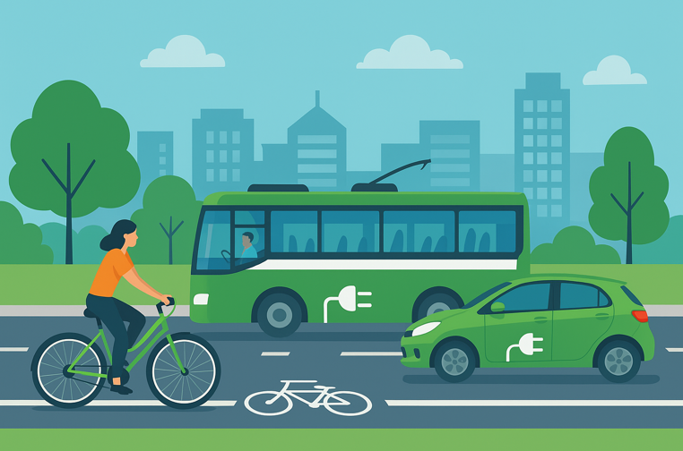

Nous vous conseillons de lire cette explication avant de lire cette partie.
Des actions concrètes et chiffrées pour limiter le réchauffement climatique et préserver notre qualité de vie.
Exemple : un panneau solaire de 100 kW couvre 60 % d’un bâtiment public.
Exemple : une ligne de bus 5 fois/jour évite 200 à 300 trajets par semaine.
Exemple : une exploitation bio maintient un bon rendement tout en réduisant les intrants.
Objectif : réduire de 10 à 20 % la consommation énergétique annuelle d’un foyer.

Illustration générée par IA.